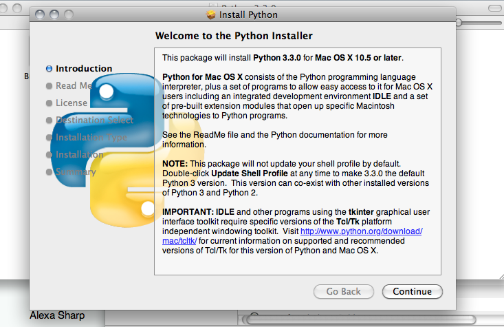
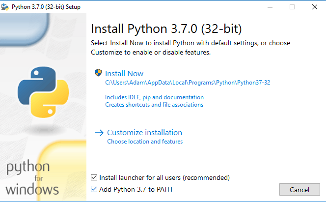
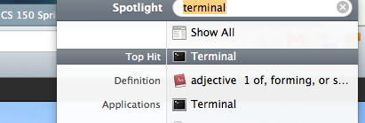
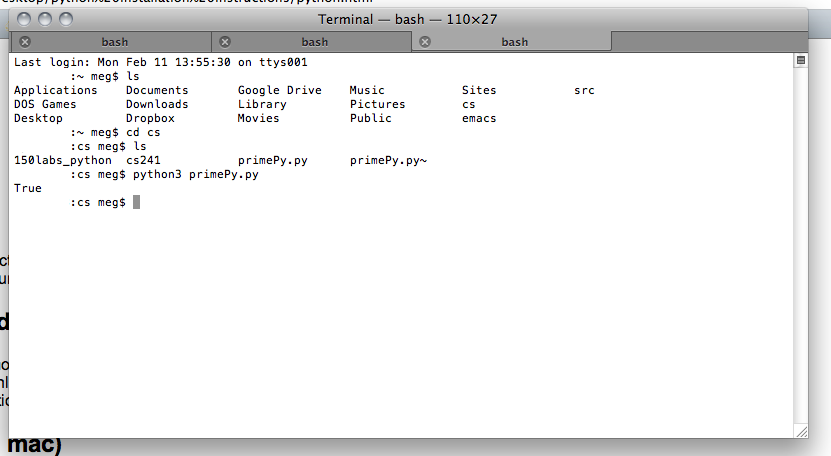
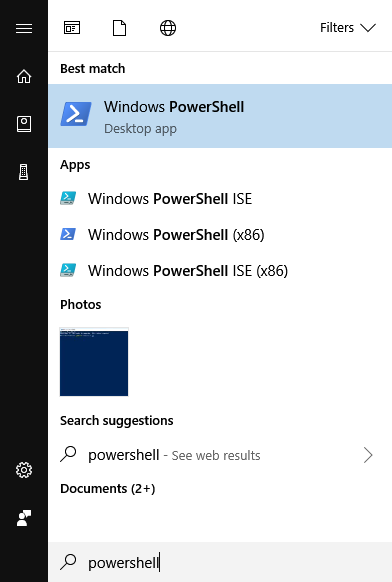
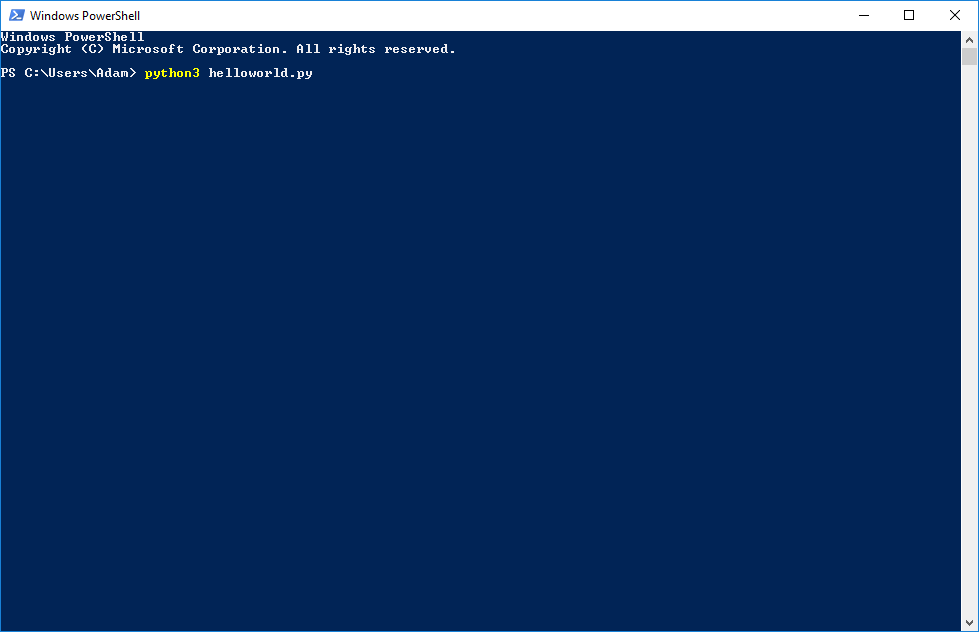
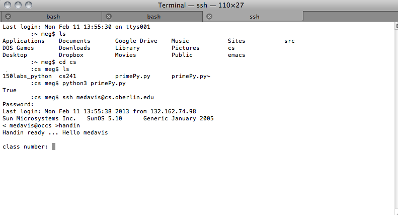

CSCI 150 Tips and Handouts
We will post general tips and handouts on this page. Please check often to make sure you do not miss any important information.
Lab Feedback and Grades
You will receive feedback and grades for each lab assignment about one week after it is turned in. To view the feedback and grades for your lab assignments, please go to: https://mail.cs.oberlin.edu/ and login with your same username and password as the lab machines. Grades (and feedback) will also be posted to Blackboard.
Problems with Firefox on the Lab Machines
If you cannot get Firefox to load on the lab machines, it might not have closed properly the last time you used it, and it thinks that it is still open. To fix this problem, open up Terminal, and type in the following commands (without the %):
% cd
% rm -rf .mozilla
Please make sure that you do NOT put a space between the period and the mozilla in the second command.
General Tips
- If you aren't sure whether you should start with CSCI 140, CSCI 150, or CSCI 151, please check out this guide!
- The Computer Science Department provides a page on General Problem Solving Tips
Slides from Class
The course slides are posted on Blackboard under "Slides and Example Code"
Example Code from Class
The example code demonstrated in class is also posted on Blackboard under "Slides and Example Code"
Installing Python 3 (for Mac)
- Go here to get Python 3.
- Download Python 3.7.2
- Double click on the Python.mpkg file (inside of the .dmg file you just downloaded); you'll be greeted with a screen that looks something like this: 
- Follow the installation instructions.
- You now have Python on your computer! Yay!
Installing Python 3 (for Windows)
- Go here to get Python 3.
- Download Python 3.7.2
- Double click on the python-3.7.2.exe file that you just downloaded; you'll be greeted with a screen that looks something like this: 
- Make sure to check the checkbox next to "Add Python 3.7 to PATH", or else you won't be able to run Python programs from Powershell (the Windows version of Terminal)
- Follow the installation instructions.
- You now have Python on your computer! Yay!
Installing Atom
- Click here to download Atom.
- Follow the installer's instructions!
- To run Atom, you can just find it in your applications, by searching on spotlight, etc!
Using Terminal (on a Mac)
Type Terminal into spotlight, like this:
Alternatively, you can go to Applications>Utilities>Terminal. To run Python programs, type "python3 progName.py", or whatever the name of your program is. It'll run as such.
Using Powershell (the Terminal alternative on Windows)
Click on the Start Menu button, and type Powershell
Select the "Windows Powershell" application (not "Windows Powershell ISE")
To run Python programs, type "python3 progName.py", or whatever the name of your program is. It'll run as such.
Submitting labs remotely (on a Mac)
- Open Terminal.
- To copy files onto the CS server: if your files are in the directory "lab1" on your current computer, you can type: "scp -r lab1 your_username@cs.oberlin.edu:~/cs150" to copy all of the files into your CS150 folder. You can replace lab1 with whatever the name of your path is.
- Type "ssh your_username@cs.oberlin.edu". Replace your_username with the username you use to log into CS machines.
- Type "cd cs150", or whatever the name of your 150 directory is.
- Assuming lab1 is already in there, type "handin".
- You should be prompted for a class number, assignment number, and the directory of your submission. Your class number is 150, your assignment number is 1 (not 01, lab01, or lab1), and the directory of your submission is whatever you named it! So, usually just "lab1".
- You should get confirmation that the lab was successfully handed in. You can also type "lshand" into the terminal to see your submitted assignment. 
- To exit OCCS, type "exit".